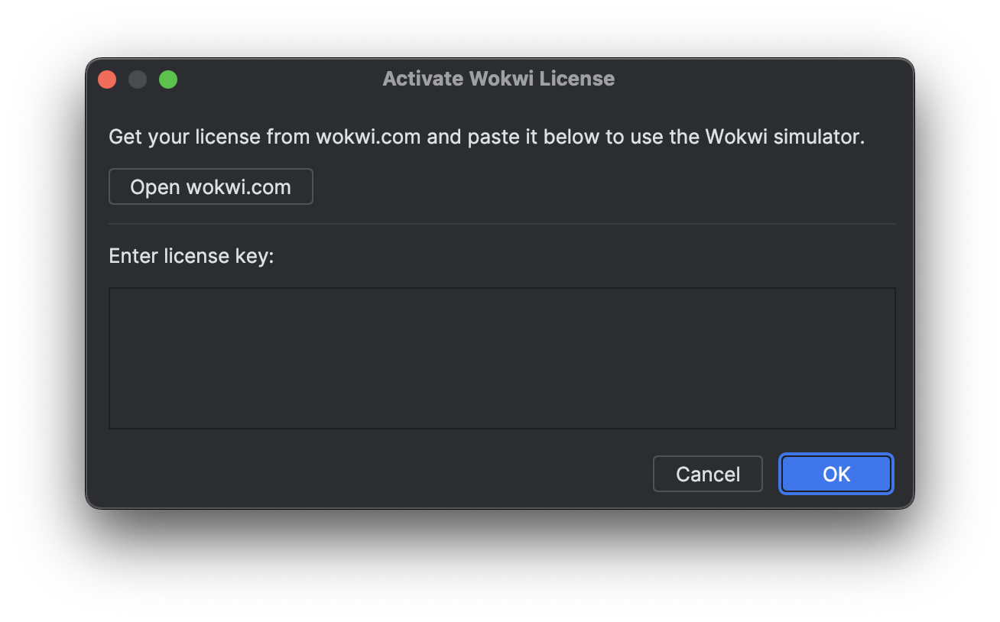

The Wokwi Intellij plugin, an open-source tool, integrates the Wokwi simulator with Jetbrains IDEs like CLion and RustRover. It adopts the Wokwi VS Code extension's configuration approach for seamless IDE transitions, supporting the same platforms.
Installation
Install and Setup Wokwi Intellij
Install the Wokwi Intellij plugin from Jetbrains' marketplace.
Click on the icon to open the Wokwi toolwindow
Click Activate License. This will open a dialog window where you can enter your license key.

Click Open wokwi.com to open the browser. Copy your license key and paste it into the dialog window.
Click Ok to save the license key.
First Project
The Wokwi documentation has a rich list of example projects. Checkout the next page to get started with a custom Wokwi project.